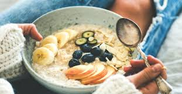
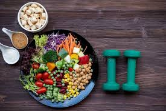
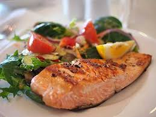
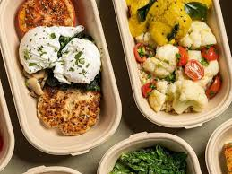
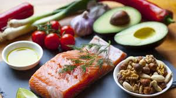
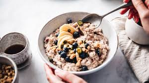

Meal Planning Tips
diet plan for the day
Breakfast
Greek yogurt with mixed berries, a handful of almonds, and a drizzle of honey
Oatmeal topped with banana slices, chia seeds, and a spoonful of peanut butter
Mid-Morning Snack
An apple with a handful of walnuts
Cottage cheese with cucumber slices and a sprinkle of black pepper
Lunch
Grilled chicken breast with quinoa, steamed broccoli, and a side salad with olive oil dressing
Lentil and vegetable stir-fry with brown rice
Afternoon Snack
Carrot and celery sticks with hummus
A protein smoothie with spinach, banana, almond milk, and protein powder
Learn the essentials of healthy meal planning to fuel your workouts!
Dinner
Baked salmon with sweet potato and roasted asparagus
Stir-fried tofu with mixed vegetables and a side of brown rice
Evening Snack (optional)
Handful of mixed nuts or a small bowl of Greek yogurt
